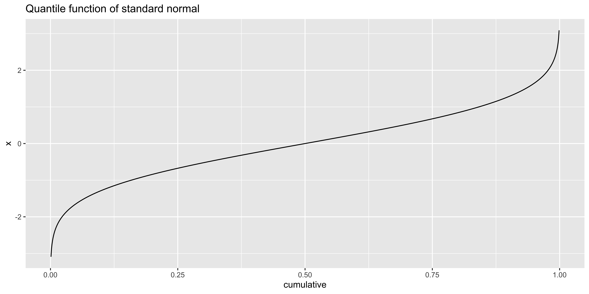

Probability
Probability terms
Absolute probability statements {prob}
A probability of something is a number between 0 and 1: \(p \in [0,1]\).
In epidemilogy probability of some outcome of a particular group/behavior is also called risk.
e.g., if smokers have a 0.125 probability of getting lung cancer, their risk of cancer is 0.125.
The corresponding percent is between 0 and 100 = \(p*100\).
e.g., a 12.5% chance of lung cancer for smokers.
The corresponding odds are the ratio of the probability of thing happening, and the probability of it not happening: \(\mbox{odds} = p/(1-p)\).
E.g., odds of a smoker getting lung cancer is 0.125/(1-0.125) = 1/7 (often expressed as 1:7).
The corresponding log-odds are the logarithm of the odds: \(\mbox{log-odds} = \log(\mbox{odds})\).
e.g., log odds of lung cancer for smokers is -0.845.
From this we can get a number of relationships:
\(p = \mbox{odds}/(1+\mbox{odds})\)
\(\mbox{odds} = \exp(\mbox{log-odds})\)
\(\mbox{log-odds} = \log\left({\frac{p}{1-p}}\right)\) (this is known as the logit transform, going from probability to log-odds)
\(p = \frac{1}{1+\exp(-\mbox{log-odds})}\) (this is the logistic transform, going from log-odds to probability)
A proportion is a descriptive statistic if \(k\) of my \(n\) observations were “fish,” then I can say that the proportion of fish in my sample is \(k/n\). These proportions are also often treated directly as probabilities, risks and converted into percents, odds, etc.
A hazard rate (also failure rate, or hazard function) is a time-varying probability associated with some survival function: what is the probability that someone will die right now, given that they have survived up to now?
Probability comparisons
The relative risk is a ratio of two probabilities, usually some “treatment” and some “baseline.” For instance risk of lung cancer for smokers is 0.125, for non-smokers it is 0.003, so the relative risk of lung cancer for smoking is 0.125/0.003 = 41.
The odds ratio is the ratio of odds between some treatment and baseline.
for instance, the odds ratio of lung cancer for smoking (compared to not) is (0.125/(1-0.125)) / (0.003/(1-0.003)) = 47.5.
The log odds ratio is the same as the difference in log odds: log((0.125/(1-0.125)) / (0.003/(1-0.003))) = log(0.125/(1-0.125)) - log(0.003/(1-0.003)) = 1.67
We might also calculate the linear difference in probabilities (or more often) percent; in this case, we should make it clear that we are talking about a difference in percentage points:
e.g., the chance of lung cancer among smokers (12.5%) is 12.2 percentage points higher than in non-smokers (0.3%).
Proportional magnitudes and confusion
Unfortunately, we use the language of “proportions” not only to describe the sample statistic corresponding to a probability estimate, but we also use it when describing the relative magnitudes of two quantities. For instance, my dog’s weight is 50 lbs, my weight is 160 lbs. So, proportional to my weight, my dog is 5/16ths, or 0.3 times, or 30% of my weight, we might also say my dog weighs 70% less than me. My weight is 16/5ths, or 3.2 times, or 320% of my dogs weight, and we might say that I weight 220% more than my dog.
The unfortunate similarities between the words used for probabilities and the words used for proportional magnitude comparisons, along with the natural tendency to compare the proportional magnitudes of probabilities (e.g., relative risk, odds ratio), tends to create a bit of a mess when probabilities are discussed in public. Watch out for confusing statements like “the chance is x% higher.” Does the x% refer to a linear difference in percentage points, or a claim about the magnitude of relative risk?
Foundations of probability
Probability theory is the extension of propositional logic to operate over uncertain truth values. If propositions are not either true or false, but are true with some probability, how can we combine multiple propositions to deduce the probability associated with some derived proposition?
The basic rules of probability are built by assigning probability to “outcomes” of a possible “sample space.” We are interested in “events,” which are subsets of the sample space. Since so much of this formalism is in set notation, so we will start there.
Set notation for combinations of outcomes.
We can build up sophisticated probability rules by combining the outcomes of the sample space in various ways. These correspond to set operations of union, intersection, and complement.
The sample space is the set of all possible outcomes of an “experiment.”
Each possible outcome of an experiment is an “elementary event,” in the sense that all the outcomes are mutually exclusive. The sample space is usually denoted as \(\Omega\). So if we consider the roll of a six-sided die, there are six possible outcomes (1, 2, 3, 4, 5, 6), so we would describe the sample space as \(\Omega=\{1,2,3,4,5,6\}\).
outcomes = c('1', '2', '3', '4', '5', '6')
# writing as characters to make it clear these are symbols corresponding to outcomes.Set union corresponds to a disjunction or an OR operation.
The set union of A and B is the set of elements that appear in either A or B.
\(x \in (A \cup B) \mbox{ if } x \in A \mbox{ or } x \in B\)
The set union is denoted with a \(\cup\) operator. For instance the union of outcomes a and b is the set that includes both: \(a \cup b = \{a,b\}\). The union of two sets is the set of all elements that appear in either set: \(\{a,b,c\} \cup \{b,c,d,e,f\} = \{a,b,c,d,e,f\}\); note that the union operation returns a set, so elements that appear in both input sets are not “double counted” – each element will appear only once in a set. We will often want to express a union of many sets, which we can write as \(\bigcup_{i=1}^n x_i = x_1 \cup x_2 \cup ... \cup x_n\).
union(c('a','b','c'), c('b','c','d','e','f'))## [1] "a" "b" "c" "d" "e" "f"Set intersection corresponds to a conjunction or an AND operation
The set intersection of A and B is the set of elements that appear in both A and B.
\(x \in (A \cap B) \mbox{ if and only if } x \in A \mbox{ and } x \in B\)
Set intersection is denoted with a \(\cap\) operator. The intersection of two sets is the set of elements that appear in both sets. For instance \(\{a,b,c\} \cap \{b,c,d,e,f\} = \{b,c\}\). The intersection of two sets that share no elements is the null, or empty, set \(\{a,b,c\} \cap \{d,e,f\} = \emptyset\), these sets are called disjoint.
intersect(c('a','b','c'), c('b','c','d','e','f'))## [1] "b" "c"Set complement is negation: the set of possible elements that are NOT in the set.
\(\neg A = \Omega \setminus A\)
Generally, it is clearer to explicitly refer to a relative set complement, or set difference, to specify which “possible” elements to consider, this is denoted \(B \setminus A\) – the set of elements in B that are not in A: \(\{a,b,c\} \setminus \{b,c,d,e,f\}=\{a\}\). In our context, we will talk about the absolute set comlement, which we will denote with the logical negation operator \(\neg A\) (conventionally this would be written with the superscript c: \(A^\complement\)). The absolute set complement has an implicit relative complement to the set of all possible outcomes, in our case \(\neg A = \Omega \setminus A\).
setdiff(outcomes, c('2', '4', '6'))## [1] "1" "3" "5"It may now be apparent that the set operations we consider also correspond to the basic building blocks of propositional logic: disjunctions, conjunction, and negation. We will see that the rules of probability are effectively the rules of logic extended to apply to uncertain truth values (as probabilities).
Basic probability definition and axioms
Probability is assigned to each outcome, and usually written as \(P(\cdot)\). So we would write the probability of a particular outcome (say, rolling a 6) as \(P(\mbox{"6"})\), but usually we would just substitute a symbol to stand in for a specific outcome (e.g., \(u = \mbox{"6"}\), so probability of rolling a six would be \(P(u)\)). Probability is always non-negative (and as we will see soon, no larger than 1, meaning it falls in the interval \([0,1]\)).
Probability is a number between 0 and 1 assigned to every possible outcome in the sample space
\(P(x) \in [0, 1] \mbox{ for all } x \in \Omega\).
p.outcomes = c(1/6, 1/6, 1/6, 1/6, 1/6, 1/6)
names(p.outcomes) <- outcomes
p.outcomes## 1 2 3 4
## 0.1666667 0.1666667 0.1666667 0.1666667
## 5 6
## 0.1666667 0.1666667The probability of a union of two outcomes is the sum of their probabilities. This basic axiom of probability allows us to calculate the probability of one of a set of outcomes happening based on the probabilities of the individual elements in that set, from this axiom we can build many of the other laws of probability.
Probability of a union of two outcomes is the sum of their probabilities
\(P(a \cup b) = P(\{a,b\}) = P(a) + P(b)\).
Note that this simple addition applies to the union of outcomes because those are necessarily different and non-overlapping isolated elements. This will generally not hold true for disjunctions of events, which may consist of overlapping sets of outcomes.
p.1.2 = sum(p.outcomes[c('1', '2')])The final axiom of probability is that it sums to 1, meaning that the total probability being distributed over the sample space is 1.
Total probability of the sample space is 1.0
\(P(\Omega) = P\left( {\bigcup\limits_{x \in \Omega} x }\right) = \sum\limits_{x \in \Omega} P(x) = 1\)
Basically, this means all the probabilities of isolated outcomes have to sum to 1.
sum(p.outcomes)## [1] 1Applying basic probability axioms
So far we have dealt with a uniform probability distribution: each side of the die has the same chance (1/6), or more generally \(1/|\Omega|\) where \(|x|\) indicates the number of elements in \(x\). We could define such a uniform probability distribution over outcomes more generally as:
p.outcomes = rep(1/length(outcomes), length(outcomes))
names(p.outcomes) <- outcomes
p.outcomes## 1 2 3 4
## 0.1666667 0.1666667 0.1666667 0.1666667
## 5 6
## 0.1666667 0.1666667Of course, this assumes we have a fair die (all sides have equal probability). Instead, our die might be biased. Let’s say it is biased so that 1 is twice as likely to come up as any of the other five outcomes (which all are equally likely). We can do some algebra to figure out what this means about the probabilities assigned to each outcome:
\(P(\mbox{'1'}) = 2*P(\mbox{'other'})\)
And since – all probabilities must sum to 1:
\(P(\mbox{'1'}) + 5*P(\mbox{'other'}) = 1\)
so
\(2 * P(\mbox{other}) + 5 * P(\mbox{other}) = 1\)
\(P(\mbox{other}) = 1/7\) and \(P(\mbox{1}) = 2/7\).
We can also calculate this quickly in R. Here we define “unnormalized” probabilities (which do not sum to 1, but have the appropriate relative relationships). We can normalize a vector of numbers by dividing every element by the sum of all elements, thus returning probabilities with the appropriate relationships that all sum to 1:
unnormalized = c(2, 1, 1, 1, 1, 1)
p.outcomes = unnormalized/sum(unnormalized)
names(p.outcomes) <- outcomes
p.outcomes## 1 2 3 4
## 0.2857143 0.1428571 0.1428571 0.1428571
## 5 6
## 0.1428571 0.1428571These axioms are sufficient to derive an assortment of probability rules that we are used to for describing events.
Events and the rules of probability.
Probability becomes useful when we start considering events.
An event is a subset of outcomes from the sample space.
\(E \subset \Omega\)
For instance, in our die-rolling example, an event might be “rolling an even number” which is a subset of the sample space: \(E = \{2, 4, 6\}\). By our axiom about the probability of a union of outcomes, we know that
The probability of an event is the sum of the probabilities of the outcomes included in it:
\(P(E) = \sum\limits_{x \in E} P(x)\).
For instance, the probability of “even” is P(even) = P(2)+P(4)+P(6).
p.event = function(subset){
sum(p.outcomes[subset])
}
even = c('2', '4', '6')
p.event(even)## [1] 0.4285714(remember, we are still dealing with the unfair dice roll with a ‘1’ twice as likely as the other outcomes)
We can combine events with conjunctions and disjunctions. While we will mostly refer to conjunctions and disjunctions using the familiar terms “and” (\(\&\)) and “or” (\(\lor\)) instead of the set notation “intersection” (\(\cap\)) and “union” (\(\cup\)), it is useful to flesh out how they are related.
Consider the events even (\(E=\{2,4,6\}\)), and greater than 3 (\(G=\{4, 5, 6\}\)).
A conjunction (and) of two events is also an event defined as their set intersection. For instance if we consider C to be the conjunction of events E (even, \(E=\{2,4,6\}\)) and G (greater than 3, \(G = \{4,5,6\}\)), C = E and G = \(E \cap G = \{2,4,6\} \cap \{4,5,6\} = \{4,6\}\).
even = c('2', '4', '6')
greater = c('4', '5', '6')
intersect(even, greater)## [1] "4" "6"p.event(intersect(even,greater))## [1] 0.2857143A disjunction (or) of two events is also an event defined as their set union. For instance even OR “greater than 3”: \(B = E \cup G = \{2, 4, 6\} \cup \{4, 5, 6\} = \{2, 4, 5, 6\}\).
union(even,greater)## [1] "2" "4" "6" "5"p.event(union(even,greater))## [1] 0.5714286A negation (not) of an event is the set complement of that event. For instance “not even” is defined as the set of outcomes in the sample space that are not even. \(\neg E = \neg \{2,4,6\} = \{1,2,3,4,5,6\} \\ \{2,4,6\} = \{1,3,5\}\).
setdiff(outcomes, even)## [1] "1" "3" "5"p.event(setdiff(outcomes, even))## [1] 0.5714286Fortunately, we need not always carry out complicated set operations and tabulation to get the probability of an event resulting from these operations.
Probability of a disjunction (OR)
The probability of A or B is
\(P(A \lor B) = P(A) + P(B) - P(A \& B)\)
Subtracting the conjunction should make sense. Consider for instance “even” OR “greater than 3” = \(\{2,4,6\} \cup \{4,5,6\} = \{2,4,5,6\}\). \(P(\{2,4,5,6\}) = 4/7\). If we don’t subtract the conjunction we get an incorrect answer: \(P(\{2,4,6\}) + P(\{4,5,6\}) = 3/7 + 3/7 = 6/7\). We have to subtract the conjunction (\(P(\{4,6\})=2/7\)) to get the correct answer, because otherwise we end up “double counting” the outcomes that appear in both events.
Note that for disjoint events – meaning events that are mutually exclusive, thus they cannot co-occur – \(P(A \& B)=0\), so we need not subtract it. This is why when we were calculating the probability of a disjunction of outcomes (which are necessarily disjoint) we omitted that part.
p.event(even) + p.event(greater) - p.event(intersect(even,greater))## [1] 0.5714286p.event(union(even,greater))## [1] 0.5714286Probability of negation (NOT)
The probability of not A is
\(P(\neg A) = 1-P(A)\).
This should also make sense: We know that “not A” is the complement of A relative to the sample space. We also know that the total probability of the sample space is 1. Thus, the probability of outcomes not in A (A’s complement) must be 1 less the probability of the outcomes in A. Here we calculate the probability of “not even” two different ways: 1-P(even) and by defining a “not even” event which is the set of outcomes not included in the “even” event. As they should, they give us the same result. (We obtain the outcomes in the “not even” event via the setdiff(outcomes, even) function, which returns all the elements in outcomes that are not in even.)
1-p.event(even)## [1] 0.5714286p.event(setdiff(outcomes, even))## [1] 0.5714286To discuss the probability of a conjunction we need to first start with Conditional probability.
Conditional probability and Bayes
Let’s start by remembering where we were with our unfair die roll.
outcomes = c('1', '2', '3', '4', '5', '6')
unnormalized = c(2, 1, 1, 1, 1, 1)
p.outcomes = unnormalized/sum(unnormalized)
names(p.outcomes) <- outcomes
p.outcomes## 1 2 3 4
## 0.2857143 0.1428571 0.1428571 0.1428571
## 5 6
## 0.1428571 0.1428571p.event = function(subset){
sum(p.outcomes[subset])
}
even = c('2', '4', '6')
greater = c('4', '5', '6')The Conditional probability of event A given that event B has occurred is the probability of A and B divided by the probability of B:
\(P(A \mid B) = \frac{P(A \& B)}{P(B)}\)
Which might be read as: of all the ways in which B might occur, how many of them co-occur with A?
For instance, the probability of “even” given “greater than 3” is asking: of all the ways the dice could come up greater than 3, which of them also yield an even roll?
\(P(\mbox{even} \mid \mbox{greater than 3}) = P(\{2,4,6\} \mid \{4,5,6\}) = \frac{P(\{4,6\})}{P(\{4,5,6\})}\)
# probability of even given greater than 3
p.event(intersect(even,greater)) / p.event(greater)## [1] 0.6666667From this definition, we can find a general expression for the probability of a conjunction.
The probability of a conjunction of two events (A and B):
\(P(A \& B) = P(A \mid B) * P(B) = P(B \mid A) * P(A)\)
There are two special cases worth mentioning:
Two events are disjoint (mutually exclusive) if their interesction is null:
\(A \cap B = \emptyset\);
consequently: \(P(A \& B) = P(A \mid B) = P(B \mid A) = 0\), and \(P(A \lor B) = P(A) + P(B)\)
If two events are independent then:
\(P(A \& B) = P(A) * P(B)\), and \(P(A \mid B) = P(A)\), and \(P(B \mid A) = P(B)\)
Note that often this special case (of independent events) is described as the rule for the probability of a conjunction, but in most cases, events are not independent.
Chain rule
We can calculate complex conjunctions by repeating the same process of calculating a conjunction many times via the chain rule:
\(P(a \& b \& c \& d) = P(a \mid b \& c \& d) * P(b \mid c \& d) * P(c \mid d) * P(d)\)
Partitions and total probability
To express Bayes rule as it is commonly used, we first need to introduce two concepts.
A partition of sample space \(\Omega\) is a set of events that are disjoint, nonempty, and their union is \(\Omega\).
In other words, \(A\) is a partition of \(\Omega\) if every element of \(\Omega\) is in one and only one event in A.
\(\emptyset \not\in A\)
\(\bigcup\limits_{E \in A} E = \Omega\)
\(E_1 \cap E2 = \emptyset \mbox{ for all } E_1, E_2 \in A \mbox{ and } E_1 \not= E_2\)
For instance, the events {“even” and “odd”} form a partition of the sample space of die rolls. In contrast, {“even,” “odd,” and “greater than 3”} do not form a partition, as they include overlapping events (they are not disjoint). Similarly, {“1 or 2,” and “4 or 6”} are not a partition as they do not cover the full sample space (their union is not \(\Omega\)).
The law of total probability says that if events \(A_1,A_2, ..., A_n\) are a partition of \(\Omega\), then
\(P(B) = \sum\limits_{i=1}^n P(B|A_i)P(A_i) = \sum\limits_{i=1}^n P(B \& A_i)\).
We can confirm that this works in the simple case of B = “greater than 3,” and the partition is “even” and “odd.”
P(“greater than 3”) = P(“greater than 3”|even) P(even) + P(“greater than 3”|odd) P(odd)
P(“greater than 3”) = (2/3)(3/7) + (1/4)(4/7) = 3/7
greater = c('4', '5', '6')
even = c('2', '4', '6')
odd = c('1', '3', '5')
p.greater.even = p.event(intersect(even,greater)) / p.event(even)
p.greater.odd = p.event(intersect(odd,greater)) / p.event(odd)
p.even = p.event(even)
p.odd = p.event(odd)
p.greater.even * p.even + p.greater.odd * p.odd## [1] 0.4285714p.event(greater)## [1] 0.4285714Bayes’ rule
You can find an “excruciatingly gentle” introduction to Bayes’ rule.
Bayes rule follows directly from our definitions of conjunctions and conditional probabilities
\(P(B|A)P(A) = P(A \& B) = P(A|B)P(B)\)
Bayes rule provides a way to invert conditional probabilities: to go from P(B|A) to P(A|B)
\(P(A|B) = \frac{P(B|A)P(A)}{P(B)}\)
More often, in practice we substitute the law of total probability for the denominator of the Bayes rule expression:
\(P(A|B) = \frac{P(B|A)P(A)}{\sum\limits_{A'}P(B|A')P(A')}\), where \(\sum\limits_{A'}\) denotes a sum over all the events in the partition of which A is a member.
Bayes’ theorem is the basis for an entire branch of statistics, as well as a number of artificial intelligence applications. In statistics, Bayes’ theorem is often written in terms of individual hypotheses \(h\) from the hypothesis space \(\mathcal{H}\) and data \(D\), yielding:
\(P(h|D) = \frac{P(D|h)P(h)}{P(D)} = \frac{P(D|h)P(h)}{\sum\limits_{q \in \mathcal{H}} P(D|q) P(q)}\)
The individual components of this equation have names:
\(P(h)\) is the prior: how much you believe hypothesis \(h\) is true before you saw data \(D\).
\(P(D|h)\) is the likelihood: how likely are the data \(D\) to have been observed if hypothesis \(h\) were true.
\(P(h|D)\) is the posterior: how much you ought to believe hypothesis \(h\) is true given that you have seen data \(D\).
\(P(D)\) is often called the normalizing constant because it is constant regardless of which \(h\) you consider.
Consequently, it is often dropped and Bayes’ theorem is written as a proportionality: \(P(h|D) \propto P(D|h)P(h)\)
We will come back to all of these at a later point. In the meantime, we can use Bayes rule to calculate the probability that a published significant finding is truly not null (H1 rather than H0).
P(‘significant’|H0) = \(\alpha\) = 0.05
P(‘significant’|H1) = “power” = 0.6
P(H1) = 0.3 = 1-P(H0)
p.sig.H0 = 0.05 # conventional alpha
p.sig.H1 = 0.6 # assumption about power.
p.H1 = 0.3 # assumption about baserate of tested effects
p.H0 = 1-p.H1
p.sig = p.sig.H0*p.H0 + p.sig.H1*p.H1
p.H1.sig = p.sig.H1*p.H1 / p.sig
p.H1.sig## [1] 0.8372093Simulation, Sampling and Monte Carlo.
Sampling is a very helpful tool to understand probability.
When I say that the probability of a die coming up x is P(x), it implies that P(x) is the long-run frequency of the outcome: how often x would happen if we rolled this die many times. So, instead of going through the math to calculate various properties of this die-roll, we can simulate die rolls, and work on those simulations.
This works on account of various “laws of large numbers,” and in particular, the “Monte Carlo” theorem, which basically says: if you want to calculate the expectation of some function on a random variable, you can calculate it by averaging that function’s output on a bunch of samples drawn with frequency proportional to their probability under the random variable.
Let’s start by setting up the same die probabilities we worked with when discussing the foundations of probability:
library(dplyr)
outcomes <- c('1', '2', '3', '4', '5', '6')
unnormalized = c(2, 1, 1, 1, 1, 1)
p.outcomes = unnormalized/sum(unnormalized)
names(p.outcomes) <- outcomes
p.outcomes## 1 2 3 4
## 0.2857143 0.1428571 0.1428571 0.1428571
## 5 6
## 0.1428571 0.1428571Sampling, long-run frequency, and the law of large numbers.
Another way to think about this probability is as the long-run frequency of a given outcome. So we can set up a function that rolls a die and returns the side that it landed on. In this case, we can implement such sampling with the sample function.
roll.die = function(){
return(sample(outcomes, 1, replace=T, prob = p.outcomes))
}Every time we roll the die, we get a random outcome, we would call this a sample
roll.die()## [1] "6"roll.die()## [1] "1"Borel’s law of large numbers is the intuitive rule that if we repeat a random experiment many many times, the proportion of those times that had a particular outcome occur will match the probability of that outcome occurring in any one run of the experiment. In our case, we can generate many rolls of the die, then calculate what fraction of them yielded a particular outcome:
rolls = replicate(10000,roll.die())
( p.1 = sum(rolls==1)/length(rolls) )## [1] 0.2822( p.4 = sum(rolls==4)/length(rolls) )## [1] 0.1458( p.8 = sum(rolls==8)/length(rolls) )## [1] 0Sampling to estimate event probabilities.
An event in probability theory is a subset of outcomes. For instance, for our rolled die, we might define an event as “getting an even roll.” It is useful to us to think of an event as a predicate, which we apply to the outcomes to see whether or not they fit into the event. To make these kinds of calculations explicit, we can make a data frame listing all outcomes, their probabilities, and whether or not they are included in a particular event:
is.even = function(outcome){
return((as.numeric(outcome) %% 2)==0) # x %% y is the modulus operator which returns the remainder after dividing x by y.
}Just as we can calculate the probability of a particular outcome from samples, we can do the same with an event. We generate many samples, see which fall in an event, and estimate their relative frequency:
die.samples = data.frame(outcome = replicate(10000, roll.die()), stringsAsFactors = FALSE)
die.samples$even = is.even(die.samples$outcome)
head(die.samples)## outcome even
## 1 1 FALSE
## 2 1 FALSE
## 3 1 FALSE
## 4 1 FALSE
## 5 1 FALSE
## 6 5 FALSE( p.even = sum(die.samples$even) / nrow(die.samples) )## [1] 0.4256Note that this formulation of the explicit probability calculation (data frame of outcomes with associated probabilities, or data frame of samples) makes it clear what the relationship is. Basically, we treat the probability of each sampled outcome as 1/n where n is the number of samples.
Probability of a conjunction of events
The conjunction of events A and B may be thought of as another event – another subset of the outcomes that is the set intersection of A and B. Alternatively, we can just think of it as a conjunction predicate that returns true if both events are true of this outcome.
First let’s define a second event “greater than 3” (which is the subset 4,5,6 of dice outcomes).
is.greaterthan3 = function(outcome){
return(outcome > 3)
}
die.samples$greaterthan3 = is.greaterthan3(die.samples$outcome)
head(die.samples,10)## outcome even greaterthan3
## 1 1 FALSE FALSE
## 2 1 FALSE FALSE
## 3 1 FALSE FALSE
## 4 1 FALSE FALSE
## 5 1 FALSE FALSE
## 6 5 FALSE TRUE
## 7 6 TRUE TRUE
## 8 1 FALSE FALSE
## 9 3 FALSE FALSE
## 10 2 TRUE FALSENow we can define the conjunction event, which we can calculate in two ways – either by defining a new conjunction predicate, or by simply taking the logical conjunction of our two event columns.
is.even.n.greaterthan3 = function(outcome){
return( is.even(outcome) & is.greaterthan3(outcome) )
}
die.samples$even.n.greaterthan3 = is.even.n.greaterthan3(die.samples$outcome)
( p.even.n.greaterthan3 = mean(die.samples$even.n.greaterthan3) )## [1] 0.2809Note that here we take the shortcut of taking the mean of the logical vector even.n.greaterthan3 to calculate the proportion that is true. This works because true=1, false=0, consequently sum(TF) = n.true, and mean(TF) = n.true/n.total – the proportion that were true.
Sampling to get probability of disjunction
is.even.or.greaterthan3 = function(outcome){
return( is.even(outcome) | is.greaterthan3(outcome) )
}
die.samples$even.or.greaterthan3 = is.even.or.greaterthan3(die.samples$outcome)
( p.even.or.greaterthan3 = mean(die.samples$even.or.greaterthan3) )## [1] 0.5637Sampling to calculate conditional probability
We can calculate a conditional probability in two ways (say, P(‘even’ | ‘greater than 3’))
- We can make a subset of the samples, for which the condition is true, and do our regular calculations on it.
( p.even_greaterthan3 = filter(die.samples, greaterthan3 == TRUE) %>% summarize(p.even = mean(even)) )## p.even
## 1 0.6704057- Or we can take the shortcut from our understanding the definition of conditional probability (P(A|B) = P(A&B)/P(B))
( p.even_greaterthan3 = sum(die.samples$even.n.greaterthan3)/sum(die.samples$greaterthan3) )## [1] 0.6704057Distribution functions: PDF, CDF, Quantile
tl;dr;
d*gives the probability mass/density, (e.g.,dnorm)
p*gives the cumulative probability, (e.g.,pnorm)
q*gives the quantile (inverse cdf) (e.g.,qnorm)
Random variables are defined by their probability distributions which describe the probability with which that variable will take on any of its possible values. Random variables may be categorized by which values they can take on: discrete random variables take on only a countable number of values (e.g., integers: 1, 2, 3, 4), while continuous random variables take on an uncountable number of values (e.g., rational numbers: 1, 1.01, 1.001, 1.0001, …).
Probability distribution (mass and density) functions (p.d.f.)
Discrete random variables have probability mass functions which assign some amount of probability to each possible value: \(P(X=x) = f_X(x)\). In R these are prefixed with d, as in dbinom.
In contrast, Continuous random variables have infinitely many possible values, and the probability associated with each one of them is effectively nil. Consequently, they have probability density functions (PDF) which describe the density of probability at each value. Consequently, probability can only be defined for a possible interval of values, which is calculated by integrating the probability density within that interval \(P(a < X < b) = \int_a^b f_X(x) dx\). In R these are also prefixed with d, as in dnorm.
x = seq(-3,3,by=0.001)
library(ggplot2)
ggplot(data.frame(x=x, dens=dnorm(x,0,1)), aes(x,dens))+geom_line()+ggtitle('Probability density function of standard normal')
For discrete variables, each candidate value has some non-zero probability assigned to it; hence we talk about the probability “mass” at each value. However, continuous variables do not take on a countable number of alternatives. For instance, the interval \([0,1]\) has uncountably many alternatives: 0.8, 0.83, 0.836, 0.8362, … etc. If we distribute probability over each of these alternatives, each one will get infinitesimally little probability mass (0). So, it doesn’t make sense to talk about the distribution of probability mass over these alternatives. Instead, we talk about the density of probability at a given point. Actual probability values are obtained by integrating the density over some interval. (Usually, it is most convenient to deal with the cumulative distribution of a continuous variable.)
Cumulative distribution functions (c.d.f.)
The cumulative distribution function (CDF) at \(x\) gives the probability that the random variable is less than or equal to \(x\): \(F_X(x) = P(X \leq x)\), calculated as the sum of the probability mass function (for discrete variables) or integral of the probability density function (for continuous variables) from \(-\infty\) to \(x\).
For discrete: \(F_X(x) = \sum_{x' \leq x} f_X(x')\).
For continuous: \(F_X(x) = \int_{-\infty}^x f_X(t)dt\).
In R CDFs are prefixed with p, as in pnorm.
x = seq(-3,3,by=0.001)
ggplot(data.frame(x=x, cumulative=pnorm(x,0,1)), aes(x,cumulative))+geom_line()+ggtitle('Cumulative distribution function of standard normal')For instance, IQ is normally distributed with mean 100 and standard deviation 15. The cumulative distribution of IQ at 100 is 0.50, because half of the IQ scores are less than or equal to 100, by definition. We can assess the cumulative distribution of such normal variables with pnorm(), for instance, the cumulative probability at IQ=120 is given by pnorm(120,100,15)=0.9087888. This tells us that 120 is the 90.878878th percentile of IQ. In other words the percentile of \(x\) is \(100\cdot P(X \leq x) \%\), or \(100 \cdot F_X(x) \%\).
Slight technicality for discrete random variables
By our basic rules of probability, we should see that \(P(X \geq x) = 1 - P(X < x)\) (since all X values that are not greater or equal to x must be smaller than x).
For continuous random variables, we can take a bit of a shortcut, and calculate \(P(X \geq x) = 1 - P(X \leq x)\), because for continuous variables \(P(X=x)\) is infinitesimally small, so the fact that we are counting \(X=x\) (rather than counting only \(X<x\)) makes no difference, since exactly x has zero probability. Consequently, we can calculate the probability that IQ will be greater or equal to 120 as 1-pnorm(120,100,15).
In contrast, for discrete variables, \(P(X = x)\) has some non-zero probability, so we cannot simply calculate \(P(X \geq x)\) as \(1-P(X \leq x)\). For instance, if we consider the number of coins that come up heads out of 10 fair flips (which is given by the binomial(10,0.5) distribution). The probability of getting 7 or more heads can be calculated as sum(dbinom(seq(7,10),10,0.5))=0.171875. However, we get the wrong answer if we try to calculate it as 1-pbinom(7,10,0.5) = 0.0546875. Instead, we must calculate it as \(P(X \geq x) = 1-P(X < x)\): 1-pbinom(6,10,0.5) = 0.171875.
Put another way: \(P(X \leq 7)=0.95\) and \(P(X \geq 7)=0.17\) sum to more than 1.0 because they double-count \(P(X=7)=0.12\). \(P(X < 7)=P(X \leq 6)=0.83\) and \(P(X \geq 7)=0.17\) do sum to 1.0.
In short: be careful when calculating the upper cumulative distribution tail of discrete distributions.
Quantile functions (inverse CDF).
If we want to know what IQ score one would need to have to be in the 95th percentile, we want to find the IQ score such that the cumulative probability at that score is 0.95. These sorts of questions ask about the inverse cumulative distribution function, or the quantile function. In R we can calculate this with q* functions. For instance, to get the 95th percentile IQ: qnorm(0.95, 100, 15) = 124.6728044. We generally write the quantile function as \(F^{-1}_X(q)\), and this quantile function is defined in terms of the cumulative probability: \(F^{-1}_X(q) = x \mbox{ iff } F_X(x)=q\). Thus the q* (quantile) and p* (cumulative probability) functions are inverses of each other:
pnorm(qnorm(0.8, 100, 15), 100, 15)=0.8 and
qnorm(pnorm(75, 100, 15), 100, 15)=75
q = seq(0.001,0.999,by=0.001)
ggplot(data.frame(cumulative=q, x=qnorm(q,0,1)), aes(cumulative,x))+geom_line()+ggtitle('Quantile function of standard normal')
Special named quantiles.
Quantiles place points evenly along the c.d.f., effectively dividing the c.d.f. into even intervals. The \(q\)-quantiles tesselate the full c.d.f. range (0 to 1) in intervals of \(1/q\). The kth q-quantile refers to the value of \(x\) such that \(F_X(x)=k/q\). For instance, a 4-quantile (usually called a quartile) places four points along the c.d.f., the first at 0.25, the second at 0.5, the third at 0.75, the fourth at 1.0. There are names for various common quantile splits. ‘quartiles’ (\(q=4\)), ‘quintiles’ (\(q=5\)), ‘deciles’ (\(q=10\)), ‘percentiles’ (\(q=100\)). You will see these special names in the literature, but we will tend to just refer to quantiles by their corresponding probability.
While a given quantile typically refers to the exact \(x\) value, it is often used to refer to the interval below that point. For instance, I might say that I scored in the “bottom” quartile, meaning that my score was somewhere between the lowest score and the score that corresponds to the first quartile (my percentile is somewhere between 0 and 25). Or that I was in the third quartile (my percentile was somewhere between 50 and 75), etc.
Quantiles for discrete variables.
data.frame(x=0:10, cdf=pbinom(0:10, 10, 0.5))## x cdf
## 1 0 0.0009765625
## 2 1 0.0107421875
## 3 2 0.0546875000
## 4 3 0.1718750000
## 5 4 0.3769531250
## 6 5 0.6230468750
## 7 6 0.8281250000
## 8 7 0.9453125000
## 9 8 0.9892578125
## 10 9 0.9990234375
## 11 10 1.0000000000For discrete variables, it may be the case that a particular quantile cannot be specified exactly . For instance, the 0.5th quantile in the distribution of coin flips above falls somewhere between 5 and 6. There are a number of ways to interpolate between 5 and 6 to produce an estimate of what that quantile “really” is. Generally if you need to find a given quantile and you can’t specify it exactly, be conservative (i.e., pick the number that is less favorable to whatever it is you are trying to do).
Expectation and moments
Let’s consider some discrete random variable, X:
( rv.X <- tibble::tibble(x = 1:10, p.x = c(0.05, 0.05, 0.1, 0.1, 0.2, 0.25, 0.1, 0.05, 0.05, 0.05)) )## # A tibble: 10 x 2
## x p.x
## <int> <dbl>
## 1 1 0.05
## 2 2 0.05
## 3 3 0.1
## 4 4 0.1
## 5 5 0.2
## 6 6 0.25
## 7 7 0.1
## 8 8 0.05
## 9 9 0.05
## 10 10 0.05The expected value, EV, or expectation (\(\mathbb{E}\left[\cdot\right]\)) of some random variable \(X\) is the probability-weighted average of the values.
For discrete random variables this is calculated as the probability-weighted sum of the values:
\(\mathbb{E}\left[X\right] = \sum\limits_{x}x P(x)\).
For continuous random variables as the probability-weighted ingral of the values:
\(\mathbb{E}\left[X\right] = \int\limits_{-\infty}^{\infty}x f_X(x)dx\).
The mean of a random variable is just its expected value:
\(\mu_X = \operatorname{Mean}\left[X\right] = \mathbb{E}\left[X\right]\).
So, our variable \(X\) has an expected value / mean of 5.4:
\(\operatorname{Mean}\left[X\right] = \mathbb{E}[X] = 1*0.05 + 2*0.05 + 3*0.1 + 4*0.1 + 5 *0.2 + 6*0.25 + 7*0.1 + 8*0.05 + 9*0.05 + 10*0.05 = 5.4\).
( mu.X <- sum(rv.X$x * rv.X$p.x) )## [1] 5.4More generally, we can calculate the expected value of some function of a random variable \(g(X)\) in the same way: e.g., \(\mathbb{E}\left[g(X)\right] = \int\limits_{-\infty}^{\infty}g(x)f_X(x)dx\). (or a sum for discrete random variables)
The variance of a random variable is the expected value of the squared distance of \(x\) from its mean:
\(\sigma_X^2 = \operatorname{Var}\left[X\right] = \mathbb{E}\left[(X-\mu_X)^2\right]\).
Sometimes it is useful to consider the equivalence:
\(\mathbb{E}\left[(X-\mu_X)^2\right] = \mathbb{E}\left[X^2\right]-\mu_X^2\).
( var.X <- sum((rv.X$x - mu.X)^2 * rv.X$p.x) )## [1] 4.74The standard deviation is the square root of the variance: \(\sigma_X = \sqrt{\sigma_X^2}\).
( sigma.X <- sqrt(var.X) )## [1] 2.177154Standardizing a random variable means subtracting the mean and dividing by the standard deviation. This is often called “z-scoring,” so we will refer to it with the function \(\operatorname{z}_X(x) = \frac{x-\mu_X}{\sigma_X}\).
( rv.X <- dplyr::mutate(rv.X, z.x = (x-mu.X)/sigma.X) )## # A tibble: 10 x 3
## x p.x z.x
## <int> <dbl> <dbl>
## 1 1 0.05 -2.02
## 2 2 0.05 -1.56
## 3 3 0.1 -1.10
## 4 4 0.1 -0.643
## 5 5 0.2 -0.184
## 6 6 0.25 0.276
## 7 7 0.1 0.735
## 8 8 0.05 1.19
## 9 9 0.05 1.65
## 10 10 0.05 2.11The skewness of a random variable is the expected value of the cubed standardized score of \(X\) (\(\frac{X-\mu_X}{\sigma_X}^3\)). \(\gamma_X = \operatorname{Skew}\left[X\right] = \mathbb{E}\left[\operatorname{z}_X(x)^3\right] = \mathbb{E}\left[\left(\frac{X-\mu_X}{\sigma_X}\right)^3\right]\).
( skewness.X <- sum(rv.X$z.x^3 * rv.X$p.x) )## [1] 0.06279246The kurtosis of a random variable is the expected value of the standardized score of \(X\) raised to the 4th power (\(\mathbb{E}\left[\left(\frac{X-\mu_X}{\sigma_X}\right)^4\right]\)). Typically, however, we consider the excess kurtosis, which subtracts 3 making it \(0\) for the Normal distribution. So we define \(\kappa_X = \operatorname{Kurt}\left[X\right] = \mathbb{E}\left[\operatorname{z}_X(x)^4\right]-3 = \mathbb{E}\left[\left(\frac{X-\mu_X}{\sigma_X}\right)^4\right]-3\).
( ex.kurtosis.X <- sum(rv.X$z.x^4 * rv.X$p.x)-3 )## [1] -0.2009827The \(n\)th moment of a random variable is the expectations of a function of \(X\) of the form \(g_n(x) = \left(\frac{x-a}{b}\right)^n\). Typically,
“first moment” refers to the mean: the first raw moment where \(g_1(x) = x\);
“second moment” refers to the variance: the second central moment where \(g_2(x)=(x-\mu_X)^2\);
“third/fourth moment” refer to skewness/kurtosis: the third/fourth standardized moments where \(g_3(x)=\operatorname{z}_X(x)^3\), and \(g_4(X)=\operatorname{z}_X(x)^4\).
There are a few useful properties about how the Mean, Variance, Skewness, and Excess Kurtosis behave under various operations:
Adding a constant
\(\operatorname{Mean}\left[X+a\right]=\operatorname{Mean}\left[X\right]+a\)
\(\operatorname{Var}\left[X+a\right]=\operatorname{Var}\left[X\right]\)
\(\operatorname{Skew}\left[X+a\right]=\operatorname{Skew}\left[X\right]\)
\(\operatorname{Kurt}\left[X+a\right]=\operatorname{Kurt}\left[X\right]\).
Multiplying by a constant
\(\operatorname{Mean}\left[a X\right]=a \operatorname{Mean}\left[X\right]\)
\(\operatorname{Var}\left[a X\right]=a^2 \operatorname{Var}\left[X\right]\)
\(\operatorname{Skew}\left[a X\right]=\operatorname{sgn}(a) \operatorname{Skew}\left[X\right]\), where \(\operatorname{sgn}(\cdot)\) is the sign function
\(\operatorname{Kurt}\left[a X\right]=\operatorname{Kurt}\left[X\right]\).
Adding an independent random variable \(Y\):
\(\operatorname{Mean}\left[X+Y\right]=\operatorname{Mean}\left[X\right]+\operatorname{Mean}\left[Y\right]\)
\(\operatorname{Var}\left[X+Y\right]=\operatorname{Var}\left[X\right] + \operatorname{Var}\left[Y\right]\)
\(\operatorname{Skew}\left[X+Y\right]=\frac{\operatorname{Skew}\left[X\right] + \operatorname{Skew}\left[Y\right]}{(\sigma_X^2 + \sigma_Y^2)^{3/2}}\)
\(\operatorname{Kurt}\left[X+Y\right]=\frac{\sigma_X^4 \operatorname{Kurt}\left[X\right]+\sigma_Y^4 \operatorname{Kurt}\left[Y\right]}{(\sigma_X^2 + \sigma_Y^2)^2}\).
It’s also useful to know what happens to the variance of X+Y when X and Y are not independent: \(\textbf{Var}[X+Y] = \textbf{Var}[X] + \textbf{Var}[Y] + 2*\textbf{Cov}[X,Y]\), (where \(\textbf{Cov}[X,Y]\) denotes the covariance of X and Y; which is 0 for independent random variables)
Sum of \(n\) independent random variables \({X_1, ..., X_n}\) all identically distributed as \(X\):
\(\operatorname{Mean}\left[\sum_{i=1}^n X_i\right]=n \operatorname{Mean}\left[X\right]\)
\(\operatorname{Var}\left[\sum_{i=1}^n X_i\right]=n \operatorname{Var}\left[X\right]\)
\(\operatorname{Skew}\left[\sum_{i=1}^n X_i\right]=\frac{1}{\sqrt{n}}\operatorname{Skew}\left[X\right]\)
\(\operatorname{Kurt}\left[\sum_{i=1}^n X_i\right]=\frac{1}{n^2}\operatorname{Kurt}\left[X\right]\).
note that these properties of the sum of independent, identically distributed random variables are symptoms of the central limit theorem in action.
Central limit theorem and the normal distribution
The central limit theorem shows that the mean of many independent (and roughly identically) distributed random variables will be (roughly) normally distributed. We are not going to prove this, but we can get a sense for it.
Here we take the mean of 1, 2, 4, 8, … 256 samples from distributions with very different shapes (chosen to have the same mean and standard deviation, for graphical convenience), and plot a histogram of those sample means. As we see, when the sample size increases, they all converge to a normal-looking distribution of sample means.
samplers= list()
samplers[['beta']] = function(n){(rbeta(n, 0.2, 0.2)-0.5)/0.423}
samplers[['unif']] = function(n){(runif(n, 0, 1)-0.5)/0.29}
samplers[['exp']] = function(n){(rexp(n, 2)-0.5)/0.5}
ns = c(1, 2, 4, 8, 16, 32, 64, 128, 256)
k =10000
df = data.frame()
for(dist in names(samplers)){
for(n in ns){
df = rbind(df, data.frame(dist=dist,
n=n,
mean=replicate(k, mean(samplers[[dist]](n)))))
}
}
library(ggplot2)
ggplot(df, aes(x=mean, color=dist, fill=dist))+
facet_wrap(~n, scales ="free")+
geom_density(alpha=0.2)
A similar intuition can be obtained from our handy expectation identities. The mean of \(n\) independent random variables \({X_1, ..., X_n}\) all identically distributed as \(X\): will have the following properties:
\(\operatorname{Mean}\left[\frac{1}{n}\sum_{i=1}^n X_i\right]= \operatorname{Mean}\left[X\right]\)
\(\operatorname{SD}\left[\frac{1}{n}\sum_{i=1}^n X_i\right]=\frac{1}{\sqrt{n}} \operatorname{SD}\left[X\right]\)
\(\operatorname{Skew}\left[\frac{1}{n}\sum_{i=1}^n X_i\right]=\frac{1}{\sqrt{n}}\operatorname{Skew}\left[X\right]\)
\(\operatorname{Kurt}\left[\frac{1}{n}\sum_{i=1}^n X_i\right]=\frac{1}{n^2}\operatorname{Kurt}\left[X\right]\).
What this tells us is that as \(n\) (the number of variables that go into our mean) increases, the mean stays the same, the standard deviation decreases with \(\sqrt{n}\), the skew decreases with \(n\) (towards 0 – the skew of a normal), and the (excess) kurtosis decreases with \(n^2\) (towards 0 – the kurtosis of a normal). Thus, the various higher-order parameters of the shape decrease toward the values of the Normal as sample size increases.
All in all: as sample size goes up, the distribution of the arithmetic mean goes to a Normal (provided the original distributions have finite variance).
Requirements for CLT to hold
A few things must hold for the central limit theorem to apply to specific measurements.
First, for the CLT to hold, the measurement has to arise from the sum of lots of little, roughly homogenous, perturbations. For instance, lots of little genetic and environmental factors contribute additively to height, and (within gender) the distribution of heights is very close to being Normal. However, this is not true of everything. Many natural properties are not the sum of little perturbations, but rather the product. For instance, if you consider the worth of your variable-rate savings account, every time period it grows by some variable percentage (your interest rate). Your account balance is not the sum of all the interest rates, but the product: it grows exponentially (geometrically), not additively, and therefore it will not follow a Normal distribution. Lots of processes in finance, nature, etc. are actually exponential growth processes, and they end up being distributed not as a Normal distribution, but as a Log-Normal. (Note that the product of many perturbations is equivalent to the sum of the logarithms of those perturbations – hence log-normal. Note also that one way that Benford’s law might arise is from such random exponential growth processes.)
Second, for the CLT to hold, the measurement has to arise from the sum of lots of little roughly homogenous perturbations. If we look at height within gender, no one factor contributes a disproportionately large amount of the variance; so the CLT holds and the distribution of within-gender heights is Normal. However, if we look at the distribution of heights across genders, we see that one factor contributes a huge amount of the variance: the gender of the person – men are quite a bit taller than women on average. Consequently, the distribution of heights across genders is not normally distributed, because that distribution is dominated by the gender variance. (One could describe the across-gender height distribution as a mixture model of two Normal distributions – we will talk about mixture models much later).
When we take the sample mean of a bunch of measurements, both of the properties above always hold; thus the central limit theorem always applies to the sample mean, so many of our statistical procedures (which assume a Gaussian distribution of the sample mean) will work in many situations.
However, another word of caution: while the central limit theorem always applies for the sample mean, it does not guarantee that \(n\) will be large enough for the mean to really be sufficiently close to Normal. In the previous section we described how quickly the Skew and Kurtosis decline to 0, but sometimes the starting Skew is very large indeed, and even a reasonably large \(n\) does not yield a normal distribution. The log-normal distribution, for instance, can have a very large skew, and in those cases, rarely is \(n\) large enough for the sample mean to end up Normal. In those cases, it is often advisable to transform the data to get rid of some of the skew. (We will talk about these sort of transformations and link functions later).
Caveats aside, the CLT applies often enough that most conventional statistical procedures are based on it. We will spend a great deal of time on Z-tests, t-tests, linear regression, ANOVA, etc, all of which assume either that the errors, or that the sample means, are normally distributed, and this assumption is often valid because of the CLT.
Normal distribution
Since in so many cases the mean from a sufficiently large sample will be normally distributed, much of classical statistics relies on this asymptotic normality of sample means.
x = seq(-5,5,by=0.01)
ggplot(data.frame(x=x, dens=dnorm(x,0,1)), aes(x=x,y=dens))+geom_area()
In R, we would get the probability density function of a normal with dnorm, its cumulative probability function with pnorm, and the quantile function with qnorm.
Properties of normal distribution
Let’s say \(X \sim \operatorname{Normal}(\mu_x, \sigma_x)\). For instance, \(X\) may be IQ scores from the population, in which case \(X \sim \operatorname{Normal}(100,15)\).
The basic properties of a Normal distribution include:
- the mean, median, and mode are all the same
- the mean (\(\mu\)) is the location parameter which slides the distribution along the X axis
- the standard deviation (\(\sigma\)) is the scale/dispersion parameter.
The basic rules of expectations apply to the means and standard deviations of transformations of Normal variables:
If \(X \sim \operatorname{Normal}(\mu_x, \sigma_x)\), the following identities hold:
- if \(Y = a+X\), then \(Y \sim \operatorname{Normal}(\mu_x+a, \sigma_x)\)
- if \(Y = aX\), then \(Y \sim \operatorname{Normal}(a \mu_x, a \sigma_x)\)
- so if \(Y = aX+b\), then \(Y \sim \operatorname{Normal}(a \mu_x+b, a \sigma_x)\)
From these rules, we can easily see that if \(X \sim \operatorname{Normal}(\mu, \sigma)\), and we define Z as \(Z = (X-\mu)/\sigma\), then \(Z \sim \operatorname{Normal}(0,1)\). If this is not obvious, convince yourself using the rules above that this will be true. This is the very common, and very useful “z-transformation,” which will take any normally distributed variable and convert it to have a “standard normal distribution” (which just means it is a normal distribution with mean = 0, and standard deviation = 1).